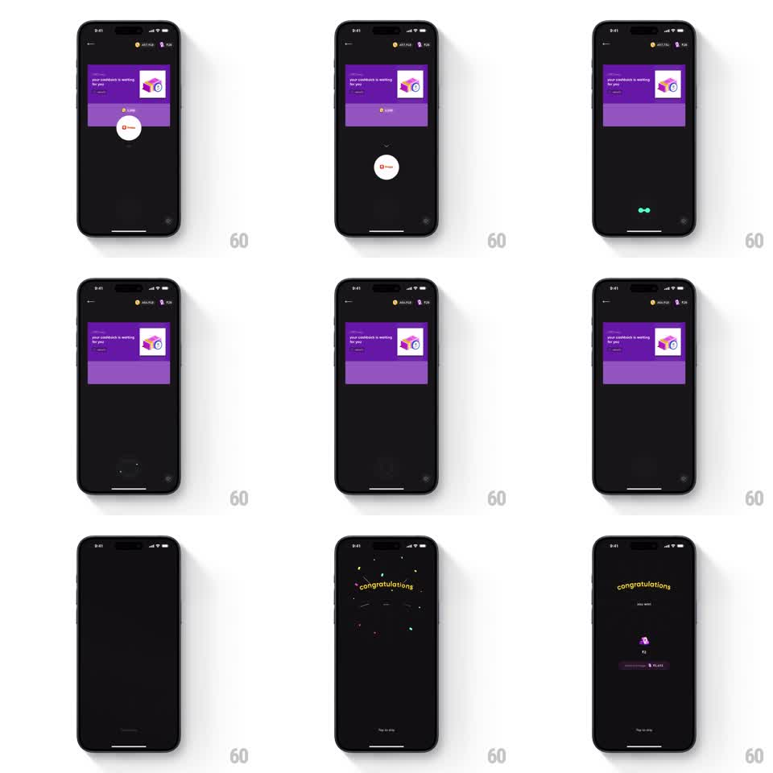

Media
Frame-by-frame

Rebuild this interaction 1:1: CRED's slide-to-claim - dragging the white key button downward off a purple cashback card shrinks it into a glowing particle that detonates into a full-screen confetti "congratulations" reveal.

Rebuild this interaction 1:1: CRED's slide-to-claim - dragging the white key button downward off a purple cashback card shrinks it into a glowing particle that detonates into a full-screen confetti "congratulations" reveal. ## Integration Integration: stack-agnostic spec - springs given as stiffness/damping, timed motions as duration + curve; map every value to your framework and animation library of choice. ## Scene Black screen, a purple card mid-frame: "your cashback is waiting for you", a key illustration, and a 2,500 amount chip. Centered below the card, a large white circular button with a key glyph. After the claim: a burst of colored confetti on black, then "congratulations - you won" with a small purple gem, a ticking amount, a remaining-balance chip, and "Tap to skip". ## Motion spec Pattern: drag-down claim morphing the trigger into a particle burst. - The white button rests with a gentle pulse (scale 1.0 to 1.04, 1.5s) and a down chevron hint above it. - Drag down: the button tracks the finger 1:1 and shrinks slightly (to ~0.9) as it leaves its seat; the card lifts its brightness a touch. - Pass the release threshold (~120px): the button accelerates downward, collapsing into a tiny glowing dot (~8px, 200ms, ease-in) that falls to mid-screen. - The dot detonates: a quick white flash ring (~150ms) and confetti bursts outward (100+ pieces, gravity and spin, ~1.5s) as the purple card fades away. - The congratulations content fades up through the falling confetti (300ms); the amount counter ticks up (~800ms, ease-out). - Tap to skip at any point jumps to the final state. ## Calibration - The drag must commit: if released before threshold, the button springs back up (stiffness ~350, damping ~22) and nothing else happens. - The particle moment is the magic trick - the button must visibly become the dot, not disappear and respawn. ## Reduced motion Tapping the button claims directly; confetti becomes a static sparkle frame; amount appears final. ## Don't miss - The gesture is down, not sideways or up - the whole metaphor is pulling the reward down to you. - Confetti keeps falling behind the congratulations text; the reveal lands inside the celebration, not after it.